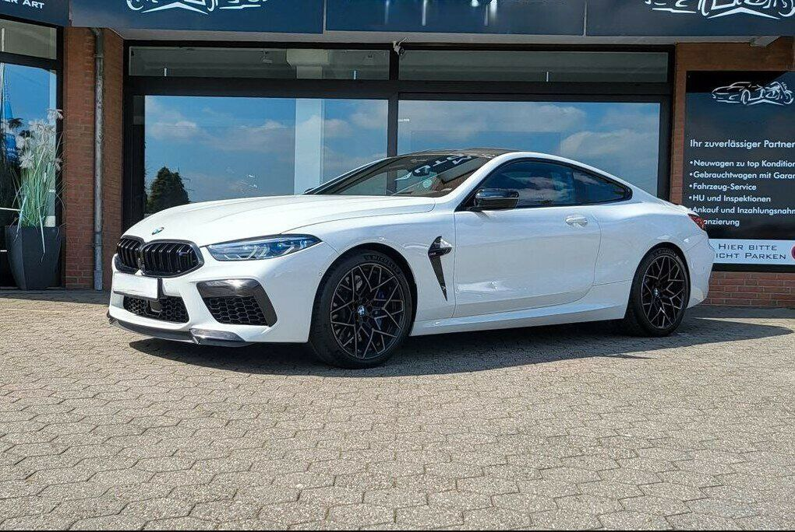
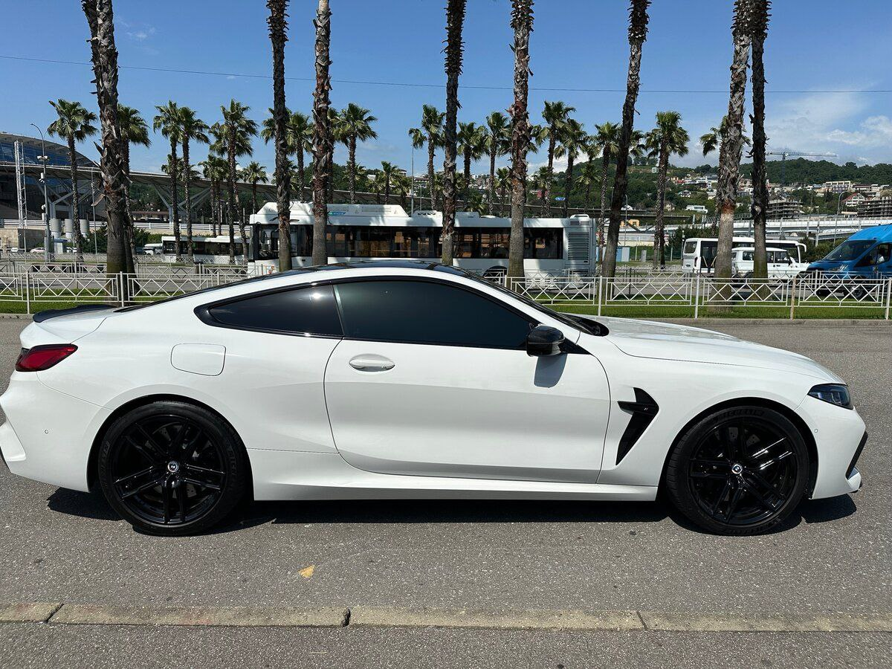
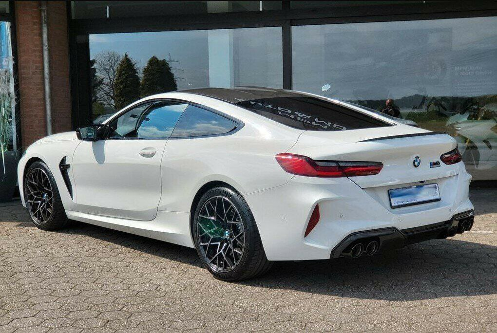
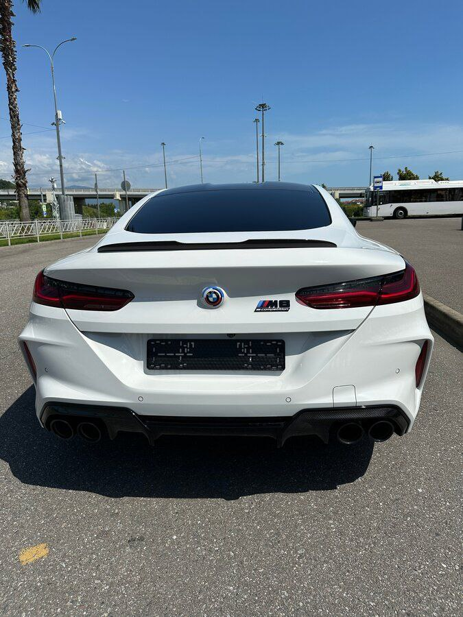
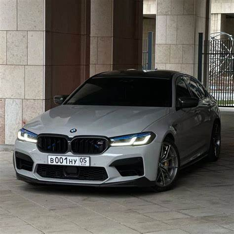

BMW M8, 2022
15 000 000₽





BMW M5 – это спортивный седан, который стал символом производительности и роскоши. Он был впервые представлен в 1984 году и с тех пор прошел через несколько поколений, каждое из которых привнесло свои инновации и улучшения. Ниже приведены основные характеристики и особенности BMW M5.
Основные характеристики BMW M5 ///Двигатель///
BMW M5 обычно оснащается мощным V8 или V10 двигателем, в зависимости от поколения. Современные модели, начиная с M5 F90, имеют 4.4-литровый V8 с двойным турбонаддувом, который развивает более 600 л.с.
Производительность:
Разгон от 0 до 100 км/ч обычно занимает менее 4 секунд, что делает его одним из самых быстрых седанов на рынке. Максимальная скорость может достигать 250 км/ч, с возможностью увеличения до 305 км/ч на специальных версиях.
Трансмиссия:
Современные модели M5 оснащены 8-ступенчатой автоматической коробкой передач, которая обеспечивает плавное переключение и высокую производительность.
Привод:
С 2017 года (модель F90) M5 стал полноприводным, что улучшает сцепление с дорогой и управляемость, особенно в сложных условиях.
Подвеска и управление:
M5 имеет усовершенствованную спортивную подвеску, которая обеспечивает отличную управляемость и комфорт. Также доступны различные режимы вождения, позволяющие адаптировать настройки автомобиля под предпочтения водителя.
BMW M5 – это идеальный выбор для тех, кто ищет сочетание производительности, комфорта и роскоши. Этот автомобиль подходит как для повседневной езды, так и для динамичных поездок по извилистым дорогам. Каждое новое поколение M5 продолжает традиции марки, предлагая новые технологии и улучшенную производительность.
15 000 000₽